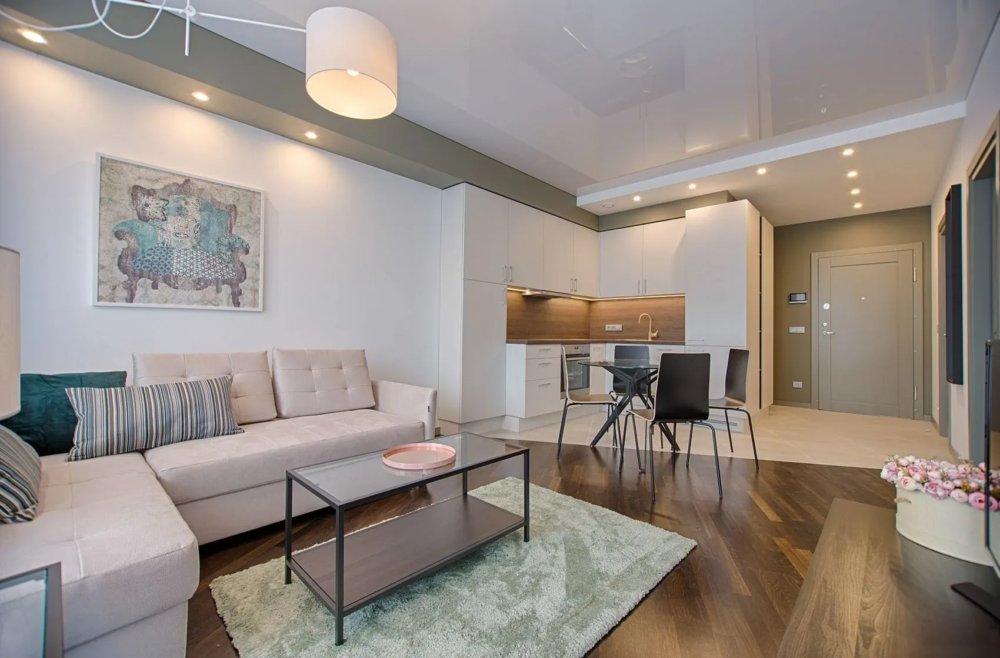

Clareza antes
da promessa.
Sem disponibilidade inventada, sem retorno financeiro prometido e sem aprovação de financiamento simulada como real.
VIVA PRIME / UMA IMOBILIÁRIA IMAGINADA PARA PESSOAS.
O lugar perfeito para sua próxima história. Um conceito demonstrativo criado pela MOSS Digital para explorar uma experiência imobiliária mais acolhedora, editorial e transparente.

MORAR É MAIS DO QUE OCUPAR.
Comprar, alugar ou passar alguns dias em outro ritmo são escolhas diferentes. Todas merecem informação clara, imagens responsáveis e tempo para decidir.
A VIVA Prime não é uma imobiliária real. Não possui histórico de vendas, unidades físicas, equipe credenciada ou carteira comercial. Seus anúncios, personagens e valores são fictícios.
EXPLORE O CONCEITO NA PRÁTICA ↗Sem disponibilidade inventada, sem retorno financeiro prometido e sem aprovação de financiamento simulada como real.
Fotos de banco ilustram atmosferas. Galerias de anúncios reais precisam conter fotos autorizadas do mesmo imóvel.
Favoritos locais, filtros e comparador ajudam a experimentar a interface. Uma operação comercial exige estrutura segura.